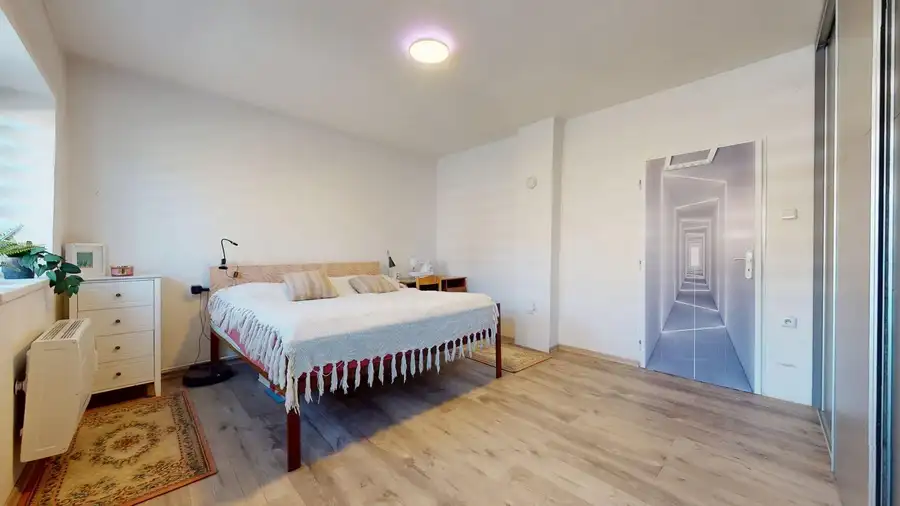
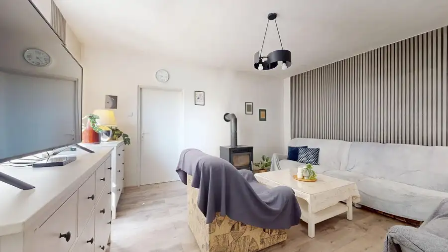
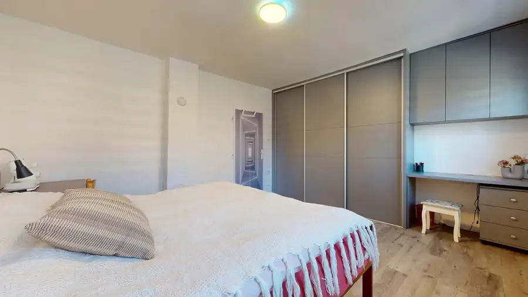
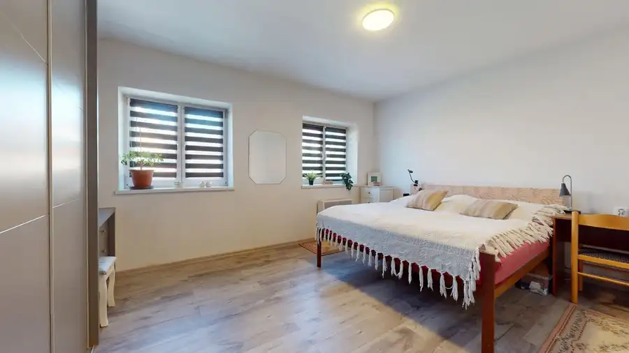
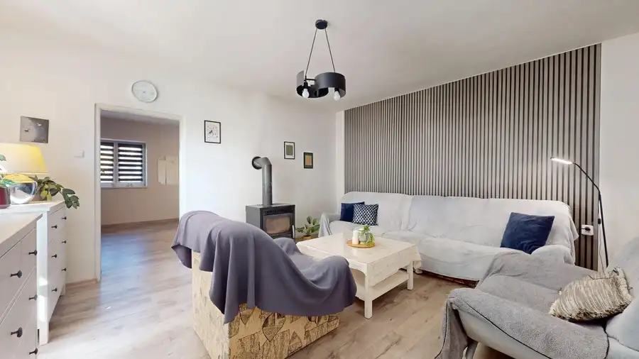
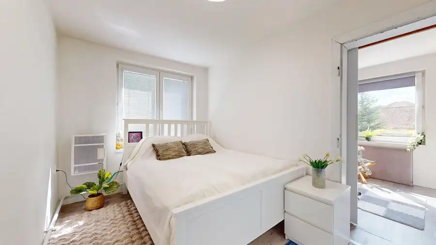
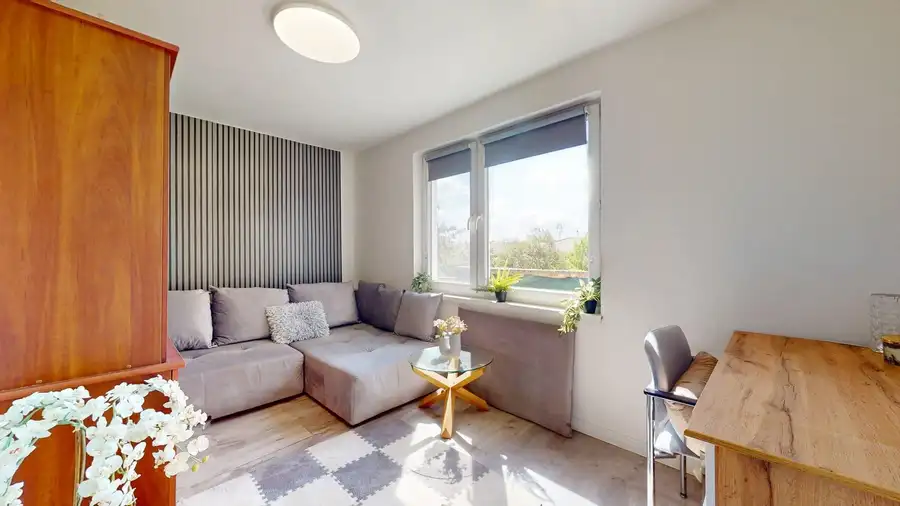

Rodinný dom po kompletnej rekonštrukcii s veľkým pozemkom
Veľké Leváre







- Plocha139 m²
- StavKompletná rekonštrukcia
- VlastníctvoOsobné
O nehnuteľnosti
Ponúkame na predaj 4i rodinný dom, ktorý prešiel postupnou rekonštrukciou. Dom sa nachádza na veľkom pozemku s rozlohou 1 403 m2, čo umožňuje pestovanie, chov zvierat alebo výstavbu ďalšej nehnuteľnosti.V rámci obce Veľké Leváre sa dom nachádza v tichej slepej ulici, je ideálny pre pokojné rodinné bývanie s výbornou dostupnosťou do Bratislavy. Dispozične byt tvorí vstupná chodba obývacia izba, 3 spálne, kuchyňa a kúpeľňa spojená s toaletou. Plusom je sklad, ktorý možno využiť ako ďalšiu izbu a tiež priestranná povala s novou strechou. Počas rekonštrukcie boli vymenené okná, položená vinylová podlaha, nové rozvody elektriny a plynu a v spálni osadená skriňa na mieru. Kúrenie je plynové + možnosť využitia piecky na tuhé palivo umiestnenej v obývacej izbe.Dom je napojený na obecnú vodu a kanalizáciu. V záhrade sa nachádza funkčná studňa na polievanie, vinič, ovocné stromy, rodinná hojdačka a veľká zázrada - v budúcnosti možnosť využiť pozemok ako stavebný.Pozemok:- zastavaná plocha a dvor: 414 m²- záhrada: 989 m²Lokalita:- tichá slepá ulica- autobusová zastávka aj vlaková stanica v pešej dostupnosti- kompletná občianska vybavenosť v obciV CENE JE ZAHRNUTÉ: Provízia pre RK - poskytnutie komplexných realitných a právnych služieb – vypracovanie rezervačnej zmluvy, kúpnej zmluvy s návrhom na vklad kúpnej zmluvy, poplatku za osvedčenie podpisov kúpnej zmluvy, uhradenie právneho poplatku za návrh na vklad kúpnej zmluvy do katastra nehnuteľností, súčinnosť pri odovzdaní nehnuteľnosti.V prípade záujmu o nehnuteľnosť Vám poskytneme komplexný realitný, právny aj hypotekárny servis.Podrobné informácie o nehnuteľnosti na tel. +421 907 524 773, alebo e-mailom na: m.dugova@espan.sk*Popis nehnuteľnosti, text a fotodokumentácia sú majetkom a autorským dielom spoločnosti Espan s.r.o.
Parametre
- Druh
- Rodinný dom
- Dátum zverejnenia
- 08. 07. 2026
- Energetický certifikát budovy
- nie je
- Plocha pozemku
- 1403 m²
- Počet nadzemných podlaží
- 1
- Stav nehnuteľnosti
- Kompletná rekonštrukcia
- Terén pozemku
- Rovinatý
- Typ
- Predaj
- Typ konštrukcie
- Tehlová
- Vlastníctvo
- Osobné
- Vykurovanie
- Krb, Lokálne, Iné
- Zastavaná plocha
- 414 m²
- Úžitková plocha
- 139 m²